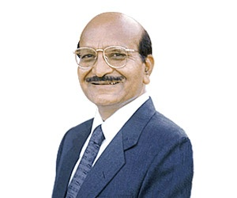

Born into a farmer family from north Gujarat, Karsanbhai finished his B.Sc. in Chemistry at age 21 and worked as a lab technician, first in the New Cotton Mills, Ahmedabad, of the Lalbhai group and then at the Geology and Mining Department of the state Government. In 1969, Karsanbhai started selling detergent powder, manufactured and packaged in his backyard. This was an after-office business - the one-man company would bicycle through the neighbourhoods selling handmade detergent packets door to door. At a price of Rs. 3 per kg, (one third the price of leading detergents), it was an instant success. Karsanbhai branded his detergent soap, Nirma, after the name of his daughter. [1] After three years, Karsanbhai felt confident enough to quit his job. Later he said, "The lack of any such precedent in my family made the venture fought with fear of failure. But farmers from North Gujarat are known for their spirit of enterprise." Karsanbhai set up shop at small workshop in an Ahmedabad suburb. The Nirma brand quickly established itself in Gujarat and Maharashtra.
The high quality and low price of the detergent made for great value. Fuelled by housewife-friendly advertisement jingles, Nirma revolutionized the detergent market, creating an entirely new segment in the economy for detergent powder. At the time, detergent and soap manufacture was dominated by multinational corporations with products like Surf byHindustan Lever, priced around Rs. 13 per kg. Within a decade, Nirma was the largest selling detergent in India. Since production was labour-intensive, Nirma also became a leading employer (employing 14,000 people 2004). Made without some phosphates, Nirma was also somewhat more environment friendly.
After establishing its leadership in economy-priced detergents, Nirma entered the premium segment, launching toilet soaps Nirma bath and Nirma beauty soap, and premium detergent Super Nirma detergent. Ventures into shampoo and toothpaste were not as successful, but the edible salt Shudh is doing well. Nirma beauty soap is one of the leading toilet soaps, behind Lifebuoy and Lux. Overall Nirma has a 20% market share in soap cakes and about 35% in detergents. Nirma also has successful operations in neighbouring countries.
In 1995, Karsanbhai started the Nirma Institute of Technology in Ahmedabad, which grew into a leading engineering college in Gujarat. An Institute of Management followed, with the entire structure being consolidated under the Nirma University of Science and Technology in 2003, overseen by the Nirma Education and Research Foundation. TheNirmalabs education project, aimed at training and incubating entrepreneurs, was launched in 2004.
Karsanbhai's two sons and son-in-law are now at leading positions in the Nirma organization:Rakesh K Patel (MBA) looks after procurement and logistics, Hiren K Patel, chemical engineer and MBA, heads marketing and finance, while Kalpesh Patel is in human resources and Healthcare Industry (Nirlife healthcare).
In 2009, Karsanbhai was ranked #92 by Forbes magazine, for the list of India's Richest persons.
In 2001, Karsanbhai was awarded an honorary doctorate by Florida Atlantic University, recognizing his exceptional entrepreneurial and philanthropic accomplishments.
In 1990, the Federation of Association of Small Scale Industries of India (FASII), New Delhi, awarded him the 'Udyog Ratna' award. The Gujarat Chamber of Commerce felicitated him as an 'Outstanding Industrialist of the Eighties'. He has served twice as Chairman of the Development Council for Oils, Soaps and Detergents.
Patel has been conferred with Padma Shri Award for the year 2010.The award was formally conferred by the President of India Mrs Pratibha Patil.
It was also announced on June 7, 2013 that he bought 40 crores six-seater chopper. After Adani Group chairman Gautam Adani and Zydus group promoter Pankaj Patel, Karshanbhai is the third Ahmadabad-based industrialist to buy a chopper.